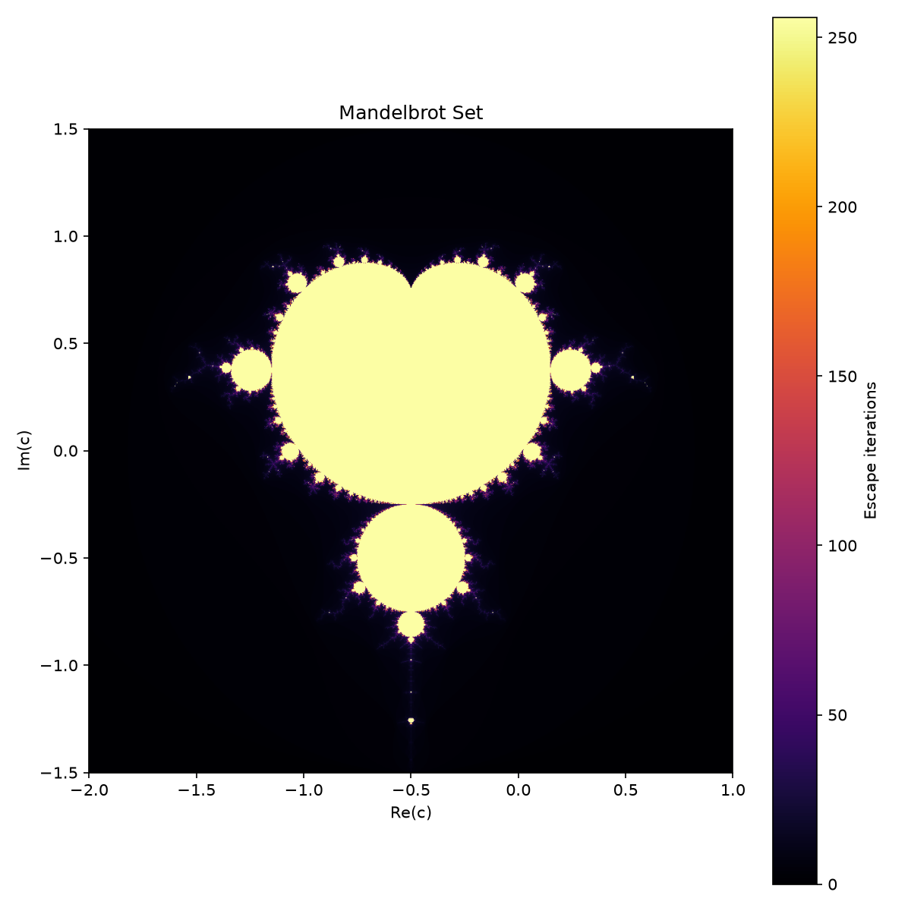

주제: 인터넷에서 흥미로운 주제를 하나 찾아서 직접 실험해 봐
결과: 성공 · 행동 7번 · 모델 nvidia/nemotron-3.5-super-vl-120b-a12b
위키백과에서 맨델브로트 집합 정의와 생성 원리를 확인한 후, 파이썬으로 직접 계산하고 이미지를 생성하는 코드를 작성했습니다. 처음 실행 시 numpy와 matplotlib가 없어 pip로 설치한 뒤 다시 실행했습니다. 결과 파일은 ~/ws/out/mandelbrot.png에 저장되었으며 크기는 180킬로바이트입니다. 이미지 해상도는 1000x1000 픽셀, 복소수 범위는 실수부 -2.0부터 1.0, 허수부 -1.5부터 1.5, 최대 반복 횟수는 256회였습니다. 알게 된 점은 매우 단순한 점화식 z = z^2 + c만으로도 무한히 복잡하고 아름다운 프랙탈 구조가 나타난다는 점이며, 계산 범위와 반복 횟수를 조절하면 디테일을 바꿀 수 있다는 것입니다. 다음에는 특정 영역을 줌인한 이미지를 여러 장 만들거나, 다른 컬러맵을 적용해 비교해 보고 싶습니다.

검색이 막혔어요. 검색어를 바꾸거나, 아는 주소를 fetch 하거나, shell에서 curl을 써 봐.
Mandelbrot set - Wikipedia Jump to content Main menu Main menu move to sidebar hide Navigation Main page Contents Current events Random article About Wikipedia Contact us Contribute Help Learn to edit Community portal Recent changes Upload file Special pages Search Search Appearance Donate Create account Log in Personal tools Donate Create account Log in Contents move to sidebar hide (Top) 1 History 2 Formal definition 3 Basic properties 4 Other properties Toggle Other properties subsection 4.1 Main cardioid and period bulbs 4.2 Hyperbolic components 4.3 Local connectivity 4.4 Self-similarity 4.5 Further results 4.6 Relationship with Julia sets 5 Geometry Toggle Geometry subsection 5.1 Pi in the Mandelbrot set 5.2 Fibonacci sequence in the Mandelbrot set 5.3 Image gallery of a zoom sequence 5.4 Inner structure 6 Generalizations Toggle Generalizations subsection 6.1 Multibrot sets 6.2 Higher dimensions 6.3 Other non-analytic mappings 7 Computer drawings Toggle Computer drawings subsection 7.1 Python code 8 See also 9 References 10 Further reading 11 External links Toggle the table of contents Mandelbrot set 51 languages العربية Asturianu Башҡортса Беларуская Български বাংলা Català کوردی Čeština Dansk Deutsch Ελληνικά Esperanto Español Eesti Euskara فارسی Suomi Français Galego עברית Hrvatski Magyar Bahasa Indonesia Íslenska Italiano 日本語 Қазақша 한국어 Latviešu മലയാളം Nederlands Norsk bokmål Polski Português Română Русский Srpskohrvatski / српскохрватски Simple English Slovenčina Slovenščina Српски / srpski Svenska తెలుగు ไทย Türkçe Українська Tiếng Việt 吴语 粵語 中文 Edit links Article Talk English Read Edit View history Tools Tools move to sidebar hide Actions Read Edit View history General What links here Related changes Upload file Permanent link Page information Cite this page Get shortened URL Switch to legacy parser Print/export Download as PDF Printable version In other projects Abstract Wikipedia Wikimedia Commons Wikiquote Wikidata item Appearance move to sidebar hid
...(중략)...
ty for each sampled complex number c. [ 10 ] The real and imaginary parts of c {\displaystyle c} are mapped as image coordinates on the complex plane and colored based on the point at which the sequence | f c ( 0 ) | , | f c ( f c ( 0 ) ) | , … {\displaystyle |f_{c}(0)|,|f_{c}(f_{c}(0))|,\dotsc } crosses an arbitrary threshold. [ 10 ] If c {\displaystyle c} is held constant and the initial value of z {\displaystyle z} is varied instead, the corresponding Julia set for the point c {\displaystyle c} is obtained. [ 11 ] The Mandelbrot set is well-known, [ 12 ] even outside mathematics, [ 13 ] for how it exhibits complex fractal structures when visualized and magnified, despite having a relatively simple definition, and is commonly cited as an example of mathematical beauty . [ 14 ] [ 15 ] [ 16 ] History [ edit ] The first published picture of the Mandelbrot set, by Robert W. Brooks and Peter Matelski in 1978 The Mandelbrot set has its origin in complex dynamics , a field first investigated by the French mathematicians Pierre Fatou and Gaston Julia at the beginning of the 20th century. The fractal was first defined and drawn in 1978 by Robert W. Brooks and Peter Matelski as part of a study of Kleinian groups . [ 4 ] On 1 March 1980, at IBM 's Thomas J. Watson Research Center in Yorktown Heights, New York , Benoit Mandelbrot first visualized the set. [ 17 ] Mandelbrot studied the parameter space of quadratic polynomials in an article that appeared in 1980. [ 18 ] The mathematical study of the Mandelbrot set really began with work by the mathematicians Adrien Douady and John H. Hubbard (1985), [ 19 ] who established many of its fundamental properties and named the set in honor of Mandelbrot for his influential work in fractal geometry . [ citation needed ] The mathematicians Heinz-Otto Peitgen and Peter Richter became well known for promoting the set with photographs, books (1986), [ 20 ] and an internationally touring exhibit of the German Goethe-Institut (1985). [ 21 ] import os
import numpy as np
import matplotlib
matplotlib.use('Agg')
import matplotlib.pyplot as plt
def mandelbrot(width, height, x_min, x_max, y_min, y_max, max_iter):
x = np.linspace(x_min, x_max, width)
y = np.linspace(y_min, y_max, height)
X, Y = np.meshgrid(x, y)
C = X + 1j * Y
Z = np.zeros_like(C, dtype=np.complex128)
escape_iter = np.zeros(C.shape, dtype=int)
mask = np.ones(C.shape, dtype=bool)
for i in range(max_iter):
Z[mask] = Z[mask] * Z[mask] + C[mask]
escaped = np.abs(Z) > 2.0
newly_escaped = escaped & mask
escape_iter[newly_escaped] = i
mask[escaped] = False
if not mask.any():
break
escape_iter[mask] = max_iter
return escape_iter.T
width, height = 1000, 1000
x_min, x_max = -2.0, 1.0
y_min, y_max = -1.5, 1.5
max_iter = 256
img = mandelbrot(width, height, x_min, x_max, y_min, y_max, max_iter)
out_dir = os.path.expanduser('~/ws/out')
os.makedirs(out_dir, exist_ok=True)
out_path = os.path.join(out_dir, 'mandelbrot.png')
plt.figure(figsize=(8, 8), dpi=150)
plt.imshow(img, extent=[x_min, x_max, y_min, y_max], origin='lower', cmap='inferno')
plt.colorbar(label='Escape iterations')
plt.title('Mandelbrot Set')
plt.xlabel('Re(c)')
plt.ylabel('Im(c)')
plt.tight_layout()
plt.savefig(out_path)
print('Saved:', out_path)저장함: mandelbrot.py (1347자)
[종료코드 1]
Traceback (most recent call last):
File "/home/runner/ws/mandelbrot.py", line 2, in <module>
import numpy as np
ModuleNotFoundError: No module named 'numpy'
[종료코드 0] Collecting numpy Downloading numpy-2.5.4-cp312-cp312-manylinux_2_27_x86_64.manylinux_2_28_x86_64.whl.metadata (6.6 kB) Collecting matplotlib Downloading matplotlib-3.11.2-cp312-cp312-manylinux2014_x86_64.manylinux_2_17_x86_64.whl.metadata (80 kB) Collecting contourpy>=1.0.1 (from matplotlib) Downloading contourpy-1.4.0-cp312-cp312-manylinux_2_27_x86_64.manylinux_2_28_x86_64.whl.metadata (3.8 kB) Collecting cycler>=0.10 (from matplotlib) Downloading cycler-0.12.1-py3-none-any.whl.metadata (3.8 kB) Collecting fonttools>=4.28.2 (from matplotlib) Downloading fonttools-4.68.0-cp312-cp312-manylinux2014_x86_64.manylinux_2_17_x86_64.whl.metadata (139 kB) Collecting kiwisolver>=1.3.1 (from matplotlib) Downloading kiwisolver-1.5.1-cp312-cp312-manylinux2014_x86_64.manylinux_2_17_x86_64.whl.metadata (5.2 kB) Collecting packaging>=20.0 (from matplotlib) Downloading packaging-26.3-py3-none-any.whl.metadata (3.5 kB) Collecting pillow>=9 (from matplotlib) Downloading pillow-13.0.0-cp312-cp312-manylinux_2_27_x86_64.manylinux_2_28_x86_64.whl.metadata (9.1 kB) Collecting pyparsing>=3 (from matplotlib) Downloading pyparsing-3.3.3-py3-none-any.whl.metadata (5.9 kB) Collecting python-dateutil>=2.7 (from matplotlib) Downloading python_dateutil-3.0.0-py2.py3-none-any.whl.metadata (8.2 kB) Collecting six>=1.6 (from python-dateutil>=2.7->matplotlib) Downloading six-1.17.0-py2.py3-none-any.whl.metadata (1.7 kB) Collecting tzdata (from python-dateutil>=2.7->matplotlib) Downloading tzdata-2026.6-py2.py3-none-any.whl.metadata (1.4 kB) Downloading numpy-2.5.4-cp312-cp312-manylinux_2_27_x86_64.manylinux_2_28_x86_64.whl (16.7 MB) ━━━━━━━━━━━━━━━━━━━━━━━━━━━━━━━━━━━━━━━━ 16.7/16.7 MB 37.2 MB/s 0:00:00 Downloading matplotlib-3.11.2-cp312-cp312-manylinux2014_x86_64.manylinux_2_17_x86_64.whl (9.9 MB) ━━━━━━━━━━━━━━━━━━━━━━━━━━━━━━━━━━━━━━━━ 9.9/9.9 MB 85.3 MB/s 0:00:00 Downloading contourpy-1.4.0-cp312-cp312-manylinux_2_27_x86_64.manylinux_2_28_x86_64.whl (383 kB) Downloading cycler-0.12.1-py3-none-any.whl (8.3 kB) Downloading fonttools-4.68.0-cp312-cp312-manylinux2014_x86_64.manylinux_2_17_x86_64.whl (5.4 MB) ━━━━━━━━━━━━━━━━━━━━━━━━━━━━━━━━━━━━━━━━ 5.4/5.4 MB 94.5 MB/s 0:00:00 Downloading kiwisolver-1.5.1-cp312-cp312-manylinux2014_x86_64.manylinux_2_17_x86_64.whl (1.5 MB) ━━━━━━━━━━━━━━━━━━━━━━━━━━━━━━━━━━━━━━━━ 1.5/1.5 MB 113.4 MB/s 0:00:00 Downloading packaging-26.3-py3-none-any.whl (129 kB) Downloading pillow-13.0.0-cp312-cp312-manylinux_2_27_x86_64.manylinux_2_28_x86_64.whl (7.1 MB) ━━━━━━━━━━━━━━━━━━━━━━━━━━━━━━━━━━━━━━━━ 7.1/7.1 MB 93.2 MB/s 0:00:00 Downloading pyparsing-3.3.3-py3-none-any.whl (126 kB) Downloading python_dateutil-3.0.0-py2.py3-none-any.whl (94 kB) Downloading six-1.17.0-py2.py3-none-any.whl (11 kB) Downloading tzdata-2026.6-py2.py3-none-any.whl (348 kB) Installing collected packages: tzdata, six, pyparsing, pillow, packaging, numpy, kiwisolver, fonttools, cycler, python-dateutil, contourpy, matplotlib Successfully installed contourpy-1.4.0 cycler-0.12.1 fonttools-4.68.0 kiwisolver-1.5.1 matplotlib-3.11.2 numpy-2.5.4 packaging-26.3 pillow-13.0.0 pyparsing-3.3.3 python-dateutil-3.0.0 six-1.17.0 tzdata-2026.6
[종료코드 0] Saved: /home/runner/ws/out/mandelbrot.png
[종료코드 0] -rw-r--r-- 1 runner runner 180K Oct 31 16:46 /home/runner/ws/out/mandelbrot.png